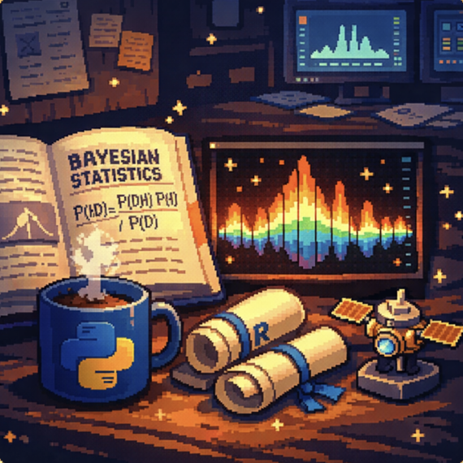
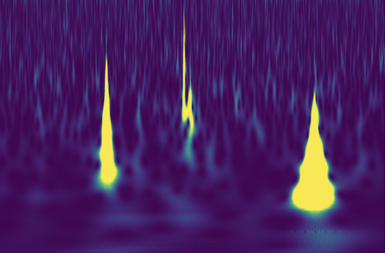
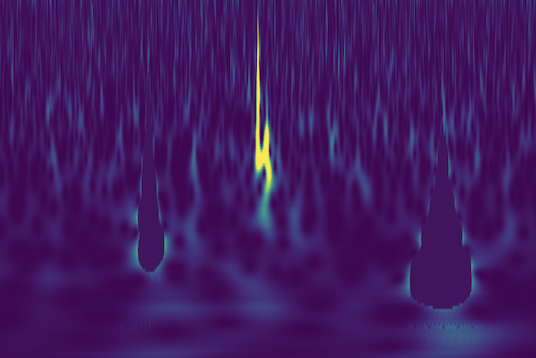
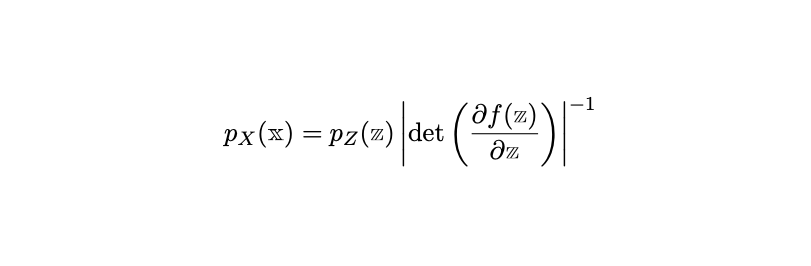

Honours Research 2026
A deep dive into the methodology, pipeline development, and simulation notes framing my current dissertation work at the University of Auckland.
Gravitational Waves
In 1915, Albert Einstein's general theory of relativity provided the theoretical basis for the existence of gravitational waves. A century later, in 2015, the LIGO detector intercepted the first recorded gravitational wave, thus confirming their existence. Since then, we have been able to expand the number of detectors globally, improve their sensitivity, and use these waves to infer the event of their origin.

Glitches
Unfortunately, such sensitive instruments are prone to external factors interfering with their readings. Detector noise is inherent to the system, and by assumptions we can account for this in our mathematics. However, glitches are patterns in time or large high-powered sections in time that cause significant issues in inference, especially with their potential to change the signal when they overlap.
My work focuses on the blip glitches, which have a teardrop shape that is morphologically similar to the signatures of events we want to study.

De-glitching
The first stage of my work involved the development of a Convolutional Neural Network (CNN) to learn the outline of glitches. Our glitches are simulated from an open access Generalised Adversarial Network, gengli, through Python. I inject these glitches into a simulated LIGO background noise series with Core-Collapse Supernovae signals injected as well. This time series data is then passed to a Continuous Wavelet Transform (CWT) that converts the time-domain data to the time-frequency domain, which I then convert to a scalogram as a graphical representation to allow the CNN to learn spatial features of the data in order to mask the sections of the transformed data the relate to the glitch - thus cleaning our data while leaving the signal intact for inference.

Neural Posterior Estimation (NPE)
Our data does not lend itself to the standard Markov Chain Monte Carlo methods traditionally used in Bayesian statistics, so we instead utilise deep learning a second time. Neural Posterior Estimation, involves training a network to learn to predict a posterior distribution in a matter of seconds if not less, based on the data. Our approach involves the use of normalising flows implemented through masked autoregressive flows.

Core-Collapse Supernovae (CCSNe) Modulations
After discussion with my supervisor, I am set to continue my research into 2027, where I will focus on applying deep learning to simulation of CCSNe and parameter estimation. This research is funded under a Marsden fund, and involves international collaborators from France and Kazakhstan, and aims to reduce the time taken to simulate an accurate CCSN signal.